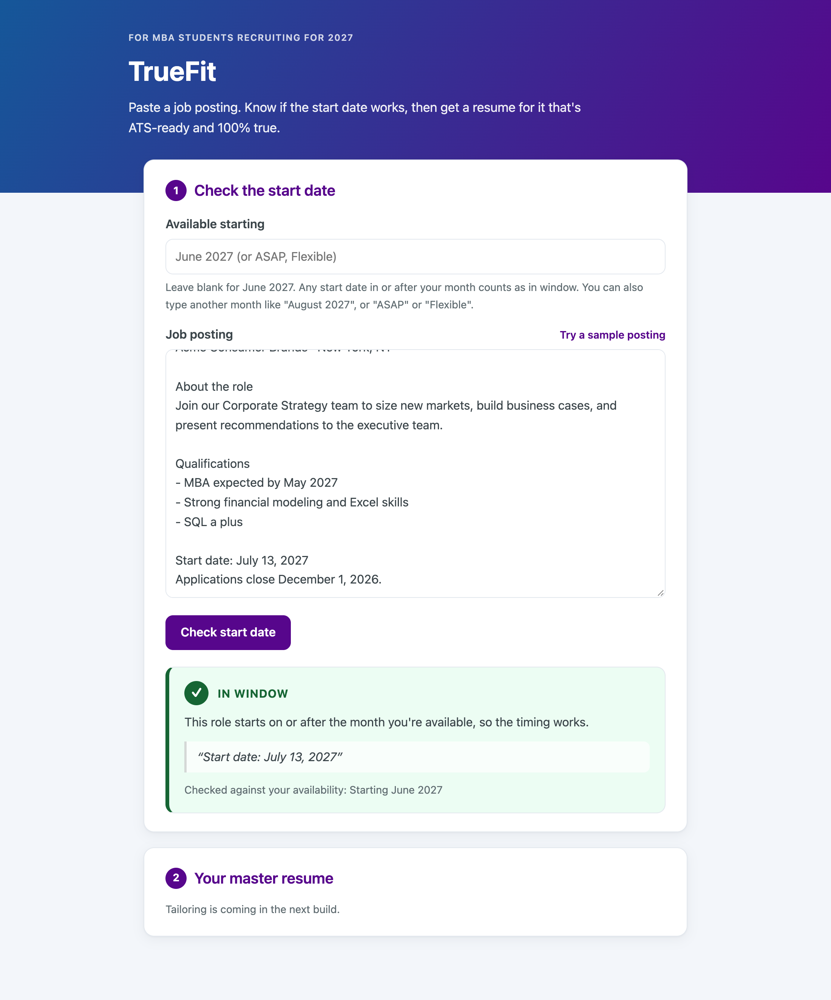

Paste a job posting. Know if the start date works, and get a resume for it that's ATS-ready and 100% true. Built for MBA students recruiting for roles starting in 2027.
Current Status: Build 2: smallest local version with analytics
Demo: Screenshot below; live cloud app URL coming in Build 5.

| Owner | Emma Schmidt (builder; product, design, and engineering) |
|---|---|
| Document status | Draft v2 · Build 2 (smallest local version) |
| Target release | Local app through Week 4; cloud launch with Build 5 (Dec 7, 2026) |
| Testers | Second-year Stern MBA classmates in my section, pod, and recruiting clubs |
| Detailed spec | specs/001-start-date-truthful-resume (requirements, plan, and tasks) |
| Last updated | Nov 10, 2026 |
Objective: Help MBA students spend their limited recruiting time only on roles they can actually start, and send a resume for each one that gets through applicant tracking systems without containing a single claim they can't back up. The test of success is simple: classmates use it instead of their current mix of reading postings closely, ChatGPT, and manual fact-checking.
Who is this for? Second-year NYU Stern MBA students (my classmates) who graduate in May 2027 and are recruiting for full-time roles that start in June 2027 or later. I can reach them directly through my section, my pod, and recruiting clubs.
The painful "Before" workflow: For every posting, they read the whole description hoping to find a start date. Often it's buried, vague ("Summer 2027"), or missing, so they apply to roles they can't take or skip roles they could. Next they tailor their resume by hand or with ChatGPT, then check every line because the AI invents skills and metrics. Finally they paste the resume into Workday or iCIMS, where the parser scrambles the formatting, and they spend more time fixing fields one by one.
The "After" workflow with this product: They paste a job posting and their master resume. In one sitting, TrueFit first pulls out the start date, quotes where it found it, and flags whether it works for when they can start (June 2027 or later by default, or another start month, "ASAP," or "Flexible"), or says "not stated." It then writes a tailored resume in a plain, single-column, ATS-friendly format that pastes cleanly into Workday or iCIMS. Every bullet links to a line in their real resume, anything it can't back up is flagged, and they can remove, restore, or edit bullets (edits are re-checked). The gaps between the posting and their experience are listed as Required or Preferred so they know what they can't claim. Their master resume can be saved on their own device so they don't paste it every time.
Riskiest Assumption: That an AI model can tailor a resume without slipping in skills, numbers, or claims that aren't in the student's master resume. If one invented claim gets through, the "100% true" promise breaks and students go back to checking every line. How we test it: the model only drafts; plain code then checks every bullet against the resume lines it cites (exact numbers, no posting keywords the student doesn't have), plus a second AI support check. Anything that fails is flagged and left out by default. A fixed set of 10 test cases is re-run whenever prompts or models change.
How Build 2 tests it: Tailoring isn't built yet, so Build 2 tests a smaller version of the same risk on the start-date check: will the model report only text that is really in the posting? The model's only job is to find and quote start-date lines. Plain Python code then confirms each quote appears word for word in the posting, drops any that don't, and works out the verdict itself, so the model never decides whether a date fits. On the 14-case start-date eval run against the real model, TrueFit got 14 of 14 right and never stated a date the posting didn't contain. The same pattern (model drafts, code verifies) is what tailoring will use in Build 3.
How the app works (Build 2): [Web page: paste posting + availability] → [Small Python (FastAPI) server on my laptop that holds the API key in .env and stores nothing] → [AI model via OpenRouter: finds and quotes start-date lines] → [Python checks: quote really in posting, date rules, verdict] → [Verdict card with the quoted evidence]. PostHog records page views, clicks, and funnel events from the web page (never posting or resume text) and errors from the server.
Planned for Build 3: the same path adds the master resume, a tailoring call, and a fact-trace check on every bullet, ending in a tailored plain-text resume and gap list.
| Goal | Metric | Target |
|---|---|---|
| Fast answers | Time from paste to start-date verdict / to copy-ready resume | < 30 s / < 2 min |
| Correct start dates | Verdict matches a human reviewer on 10+ real postings | ≥ 9 of 10, and never a date the posting doesn't state |
| 100% true | Bullets in the copy-ready resume that trace to the master resume; altered numbers | 100%; zero |
| ATS-ready | Pastes into Workday/iCIMS keeping order, no garbled characters | ≥ 9 of 10 tests |
| Useful gap list | Unsupported requirements caught vs. a human reviewer; Required/Preferred grouping agreement | ≥ 80%; ≥ 90% |
| Worth using | Classmate testers who say it's faster and they don't re-check every line | ≥ 3 |
| # | User story | Importance | Notes |
|---|---|---|---|
| 1 | As a student, I paste a posting and see its start date, where it came from, and whether it fits my availability. | Must have (P1) | Default: starting June 2027, so any later start fits. Can be another start month, ASAP, or Flexible. "Not stated" instead of guessing. |
| 2 | As a student, I get a tailored resume where every bullet is traced to my master resume, and I can remove, restore, or edit bullets. | Must have (P1) | Unbacked lines and edits are flagged and left out by default. Numbers never change. |
| 3 | As a student, I copy a clean plain-text resume and see what the posting asks for that I can't claim. | Should have (P2) | Single column, standard headings, hyphen bullets. Gaps grouped Required / Preferred. |
| Question | Answer | Date answered |
|---|---|---|
| Should TrueFit remember a student's master resume between visits? | Yes, on their own device only; clearable; no accounts. | Nov 4, 2026 |
| Can students set their own availability? | Yes: an "available starting" month (default June 2027; any later start fits), or ASAP or Flexible. Changed from a June–Oct range the same day. | Nov 4, 2026 |
| Should TrueFit screen out roles meant for undergraduates? | Yes, as a warning above the verdict with the quoted line, only when the posting targets people pursuing or finishing a bachelor's degree. "Bachelor's degree required" as a minimum doesn't trigger it, since many MBA-level roles say that. | Nov 10, 2026 |
| Should a graduation window count when no start date is given? | Yes, as quoted evidence: "In window" if it reaches the student's start month, with a note saying it's based on the graduation window. Two real 2027-start postings showed "Not stated" because they only gave a graduation window. | Nov 10, 2026 |
| Can students edit the tailored resume? | Yes: remove, restore, or edit bullets; edits are re-checked. | Nov 4, 2026 |
| Should gaps separate required from preferred? | Yes; unlabeled requirements count as Required. | Nov 4, 2026 |
| Should "Flexible" allow an optional end date? | No: availability no longer has end dates. | Nov 4, 2026 |
| Which AI model gives the best accuracy for the cost? | Open (compare on the 10-case test set in Build 2) | — |
| How often does the fact check flag fair rewordings? | Open (measure in Build 4) | — |
| Can I get access to a real Workday or iCIMS form to test pasting? | Open | — |
specs/001), and agent rules in AGENTS.md. Resume tailoring is next..env file; and how to download and use skills to extend what Claude Code can do.AGENTS.md. [Add: PostHog events verified on (date); new screenshot.]